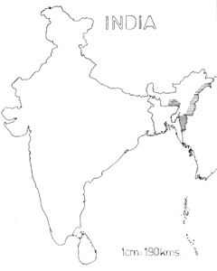

<head>
<meta http-equiv="Content-Type" content="text/html; charset=windows-1252">
<meta name="GENERATOR" content="Microsoft FrontPage 4.0">
<meta name="ProgId" content="FrontPage.Editor.Document">
<title>New Page 1</title>
<meta http-equiv="Content-Type" content="text/html; charset=windows-1252">
<meta name="GENERATOR" content="Microsoft FrontPage 4.0">
<meta name="ProgId" content="FrontPage.Editor.Document">
<title>ECONOMICALLY IMPORTANT PLANTS OF INDIA compiled by K</title>
<meta http-equiv="Content-Type" content="text/html; charset=windows-1252">
<meta name="GENERATOR" content="Microsoft FrontPage 4.0">
<meta name="ProgId" content="FrontPage.Editor.Document">
<title>ECONOMICALLY IMPORTANT PLANTS OF INDIA</title>
<meta http-equiv="Content-Type" content="text/html; charset=windows-1252">
<meta name="GENERATOR" content="Microsoft FrontPage 4.0">
<meta name="ProgId" content="FrontPage.Editor.Document">
<title>New Page 1</title>
<META HTTP-EQUIV="CONTENT-TYPE" CONTENT="text/html; charset=windows-1252">
<TITLE>Aegle marmelos </TITLE>
<META NAME="GENERATOR" CONTENT="Microsoft FrontPage 4.0">
<META NAME="CREATED" CONTENT="20010726;17265013">
<META NAME="CHANGEDBY" CONTENT="L.Sowmya">
<META NAME="CHANGED" CONTENT="20020726;13003551">
<META NAME="DESCRIPTION" CONTENT="Economically Important Plants">
<META NAME="KEYWORDS" CONTENT="Abies pindrow">
<META NAME="ProgId" CONTENT="FrontPage.Editor.Document">
<STYLE>
	<!--
		P { color: #2c9a97 }
	-->
	</STYLE>
<meta name="Microsoft Theme" content="none">
<link>
</head>

<body LANG="en-US" bgcolor="#CCCCCC" text="#009999">
<P><A NAME="begin"></A>
</P>
<table border="1" width="100%">
  <tr>
    <td width="100%" bgcolor="#1658BC">
      <P ALIGN=CENTER><b><font face="Verdana" size="6" color="#FFFFFF">Digitized
      Inventory of Animal Resources: Mammalia&nbsp;</font></b> <font color="#FFFFFF"><br>
      <b>
      Principal Investigator: Dr. R. J. B Alfred, Co-Investigator: Dr. Rama Krishna, Contributed by:
      Dr. M.S.Pradhan</b></font><br>
      </P>
    </td>
  </tr>
</table>
<p ALIGN="CENTER">&nbsp;</p>
<p ALIGN="CENTER"><a href="http://stp.unipune.ernet.in/zsi/photomap.html?code=141"><i style="mso-bidi-font-style:normal"><font color="#808000"><font face="Arial" size="6"><b style="mso-bidi-font-weight: normal; mso-ansi-font-size: 9.0pt; mso-bidi-font-size: 12.0pt; mso-fareast-font-family: Times New Roman; mso-bidi-font-family: Times New Roman; mso-ansi-language: EN-US; mso-fareast-language: EN-US; mso-bidi-language: AR-SA"><span style="mso-ansi-font-size: 9.0pt; mso-bidi-font-size: 12.0pt; mso-fareast-font-family: Times New Roman; mso-bidi-font-family: Times New Roman; mso-ansi-language: EN-US; mso-fareast-language: EN-US; mso-bidi-language: AR-SA; mso-bidi-font-weight: normal">Berylmys
bowersii</span></b></font></font></i><font face="Arial" size="6" color="#808000"><b style="mso-bidi-font-weight: normal; mso-ansi-font-size: 9.0pt; mso-bidi-font-size: 12.0pt; mso-fareast-font-family: Times New Roman; mso-bidi-font-family: Times New Roman; mso-ansi-language: EN-US; mso-fareast-language: EN-US; mso-bidi-language: AR-SA"><span style="mso-bidi-font-size: 12.0pt; mso-fareast-font-family: Times New Roman; mso-bidi-font-family: Times New Roman; mso-ansi-language: EN-US; mso-fareast-language: EN-US; mso-bidi-language: AR-SA; mso-ansi-font-size: 9.0pt; mso-bidi-font-weight: normal">
(Anderson)</span></b></font></a></p>
<P ALIGN=center><b><font size="6" face="Comic Sans MS" color="#009999">&nbsp;&nbsp;</font><font size="6" face="Comic Sans MS" color="#800080">&nbsp;</font><font size="6" face="Comic Sans MS" color="#009999">&nbsp;&nbsp;&nbsp;&nbsp;&nbsp;&nbsp;&nbsp;&nbsp;&nbsp;&nbsp;&nbsp;&nbsp;&nbsp;&nbsp;</font></b></P>
<P ALIGN=LEFT><A HREF="#Taxonomic Details"><FONT FACE="Comic Sans MS">Taxonomic 
  Details</FONT> </A><FONT FACE="Comic Sans MS"><BR>
  ----- </FONT><A HREF="#Scientific Name"><FONT FACE="Comic Sans MS">Scientific Name</FONT></A><FONT FACE="Comic Sans MS"><BR>
  ----- </FONT><A HREF="#Classification"><FONT FACE="Comic Sans MS">Classification</FONT></A><FONT FACE="Comic Sans MS"><BR>
  ----- </FONT><A HREF="#Synonyms"><FONT FACE="Comic Sans MS">Synonyms</FONT></A><FONT FACE="Comic Sans MS"><BR>
  ----- </FONT><A HREF="#Common Names"><FONT FACE="Comic Sans MS">Common Names</FONT></A><FONT FACE="Comic Sans MS"><BR>
  </FONT><A HREF="#Other Biological Details"><FONT FACE="Comic Sans MS">Other 
  Biological Details</FONT></A><FONT FACE="Comic Sans MS"><BR>
  ----- </FONT><A HREF="#Habit and Habitat"><FONT FACE="Comic Sans MS">Habit and 
  Habitat</FONT></A><FONT FACE="Comic Sans MS"><BR>
  ----- </FONT><A HREF="#Distribution"><FONT FACE="Comic Sans MS">Distribution</FONT></A><FONT FACE="Comic Sans MS"><BR>
  ---------- </FONT><A HREF="#Extend of Occurance"><FONT FACE="Comic Sans MS">Extent of
Occurrence</FONT></A><FONT FACE="Comic Sans MS"><BR>
  ---------- </FONT><A HREF="#Area of occurance"><FONT FACE="Comic Sans MS">Area of
</FONT></A><A HREF="#Area of occurance"><font face="Comic Sans MS">occurrence</font></A><FONT FACE="Comic Sans MS"><BR>
  ---------- </FONT><A HREF="#Altitude:"><FONT FACE="Comic Sans MS">Altitude</FONT></A><FONT FACE="Comic Sans MS"><BR>
  ---------- </FONT><A HREF="#Population:"><FONT FACE="Comic Sans MS">Population</FONT></A><FONT FACE="Comic Sans MS"><BR>
  ----- </FONT>
  <A HREF="#Conservation Status:"><FONT FACE="Comic Sans MS">Conservation Status</FONT></A><FONT FACE="Comic Sans MS"><BR>
  ----- </FONT>
  <A HREF="#Diagnostic Features"><FONT FACE="Comic Sans MS">Diagnostic 
  Features</FONT></A><FONT FACE="Comic Sans MS"><BR>
  ----- </FONT>
<a HREF="#Breeding system"><FONT FACE="Comic Sans MS">Breeding system</FONT></a><FONT FACE="Comic Sans MS"><BR>
  </FONT><A HREF="#Miscellaneous Information"><FONT FACE="Comic Sans MS">Miscellaneous 
  Information</FONT></A><FONT FACE="Comic Sans MS"><BR>
  </FONT><A HREF="#Literature"><FONT FACE="Comic Sans MS">Literature</FONT></A></P>
<HR SIZE=3 COLOR="#0000ff">
<P><A NAME="Taxonomic Details"></A><FONT SIZE=6><FONT FACE="Monotype Corsiva"><FONT COLOR="#1658bc"><u>Taxonomic 
  Details</u></FONT></FONT></FONT> </P>
<HR SIZE=3 COLOR="#0000ff">
<P><A NAME="Scientific Name"></A><A NAME="Classification"></A><A NAME="Synonyms"></A><A NAME="Common Names"></A> 
  <FONT FACE="Comic Sans MS, sans-serif"><U>Scientific Name</U> :&nbsp;</FONT>&nbsp;&nbsp;&nbsp;&nbsp;&nbsp;&nbsp;&nbsp;&nbsp;<a href="http://stp.unipune.ernet.in/zsi/photomap.html?code=141"><i style="mso-bidi-font-style:normal"><font face="Arial" size="6" color="#808000"><b style="mso-bidi-font-weight: normal; mso-ansi-font-size: 9.0pt; mso-bidi-font-size: 12.0pt; mso-fareast-font-family: Times New Roman; mso-bidi-font-family: Times New Roman; mso-ansi-language: EN-US; mso-fareast-language: EN-US; mso-bidi-language: AR-SA"><span style="mso-ansi-font-size: 9.0pt; mso-bidi-font-size: 12.0pt; mso-fareast-font-family: Times New Roman; mso-bidi-font-family: Times New Roman; mso-ansi-language: EN-US; mso-fareast-language: EN-US; mso-bidi-language: AR-SA; mso-bidi-font-weight: normal">Berylmys
bowersii</span></b></font></i><font face="Arial" size="6" color="#808000"><b style="mso-bidi-font-weight: normal; mso-ansi-font-size: 9.0pt; mso-bidi-font-size: 12.0pt; mso-fareast-font-family: Times New Roman; mso-bidi-font-family: Times New Roman; mso-ansi-language: EN-US; mso-fareast-language: EN-US; mso-bidi-language: AR-SA"><span style="mso-bidi-font-size: 12.0pt; mso-fareast-font-family: Times New Roman; mso-bidi-font-family: Times New Roman; mso-ansi-language: EN-US; mso-fareast-language: EN-US; mso-bidi-language: AR-SA; mso-ansi-font-size: 9.0pt; mso-bidi-font-weight: normal">
(Anderson)</span></b></font></a></P>
<P><font face="Comic Sans MS" size="3"><U>Classification</U><b><U>:</U></b></font></P>
<blockquote>
  <blockquote>
    <blockquote>
      <blockquote>
        <blockquote>
          <blockquote>
            <blockquote>
              <blockquote>
<P><span style="mso-bidi-font-size: 12.0pt; color: black"><font face="Arial" size="4">Order:</font><i style="mso-bidi-font-style:normal"><font face="Arial" size="4">Rodentia</font></i></span></P>
<P><span style="mso-bidi-font-size: 12.0pt; color: black"><font face="Arial" size="4">Suborder:</font><i style="mso-bidi-font-style:normal"><font face="Arial" size="4">Sciurognathi</font></i></span></P>
<P><font face="Arial" size="4"><span style="mso-bidi-font-size: 12.0pt; color: black">Family:<i style="mso-bidi-font-style:normal">Muridae</i><o:p>
</o:p>
</span></font></P>
                <span style="mso-bidi-font-size: 12.0pt; mso-fareast-font-family: Times New Roman; mso-bidi-font-family: Times New Roman; color: black; mso-ansi-language: EN-US; mso-fareast-language: EN-US; mso-bidi-language: AR-SA"><font face="Arial" size="4">Subfamily:</font><i style="mso-bidi-font-style:normal"><font face="Arial" size="4">Murina</font></i></span>
              </blockquote>
            </blockquote>
          </blockquote>
        </blockquote>
      </blockquote>
    </blockquote>
  </blockquote>
</blockquote>
<P><font face="Comic Sans MS, sans-serif" size="3"><BR>
  <U>Synonyms</U>:&nbsp;&nbsp;&nbsp;&nbsp;&nbsp;&nbsp;&nbsp;&nbsp;&nbsp;&nbsp;&nbsp;&nbsp;&nbsp;&nbsp;&nbsp;&nbsp;&nbsp;&nbsp;&nbsp;&nbsp;</font><font face="Arial" size="3"><span><span style="mso-bidi-font-size: 12.0pt; mso-fareast-font-family: Times New Roman; mso-bidi-font-family: Times New Roman; color: black; mso-ansi-language: EN-US; mso-fareast-language: EN-US; mso-bidi-language: AR-SA; mso-bidi-font-style: normal"><i style="mso-bidi-font-style: normal; mso-bidi-font-size: 12.0pt; mso-fareast-font-family: Times New Roman; mso-bidi-font-family: Times New Roman; color: black; mso-ansi-language: EN-US; mso-fareast-language: EN-US; mso-bidi-language: AR-SA"><i style="mso-bidi-font-style:normal">Rattus
wellsi, Thomas,1921</i>&nbsp;&nbsp;&nbsp;</i></span>&nbsp;&nbsp;</span></font><font face="Comic Sans MS, sans-serif" size="3">&nbsp;&nbsp;
</font></P>
<P><font face="Comic Sans MS, sans-serif" size="3"><BR>
  <U>Common Names</U><SPAN STYLE="text-decoration: none">:&nbsp;&nbsp;&nbsp;&nbsp;&nbsp;&nbsp;&nbsp;&nbsp;&nbsp;&nbsp;&nbsp;&nbsp;&nbsp;</SPAN></font><font face="Arial" size="3"><span style="mso-bidi-font-size: 12.0pt; color: black">Bower's Rat<i style="font-size: 10.0pt; mso-bidi-font-size: 12.0pt; color: black">&nbsp;&nbsp;&nbsp;&nbsp;&nbsp;
</i><i style="mso-bidi-font-style:
normal">Regional Names:</i>&nbsp;Not available<span style="mso-bidi-font-size: 12.0pt; mso-fareast-font-family: Arial Unicode MS; color: black"><o:p>
</span>
</span></font><font face="Comic Sans MS, sans-serif" size="3"><span style="text-decoration: none">&nbsp;&nbsp;&nbsp;&nbsp;&nbsp;</span></font><font size="4"><span style="mso-bidi-font-size: 12.0pt; font-family: Verdana; mso-fareast-font-family: Arial Unicode MS; color: black"></o:p>
</span></font>
</P>
<P>&nbsp;
</P>
<P ALIGN=RIGHT><A HREF="#begin"><U><FONT FACE="Comic Sans MS">Back to
Top</FONT></U></A></P>
<HR SIZE=3 COLOR="#0000ff">
<P><A NAME="Other Biological Details"></A><u><font face="Monotype Corsiva" color="#1658bc" size="6">Other 
  Biological Details&nbsp;&nbsp;</font></u> 
</P>
<p class="MsoNormal" style="text-align:justify"><font face="Arial" size="3"><i style="mso-bidi-font-style:
normal"><span style="mso-bidi-font-size: 12.0pt"><font color="#FF0000"><b>Threats:&nbsp;</b></font></span></i><span style="mso-bidi-font-size: 12.0pt; color: black"> Catastrophic events,
Habitat Fragmentation, Agriculture and farming, Loss of habitat, Poisoning etc.;&nbsp;<i style="mso-bidi-font-style:normal">Effect
of threats on population (Perceived or inferred)</i>:&nbsp;Declining&nbsp;<o:p>
</o:p>
</span></font></p>
<p class="MsoNormal" style="text-align:justify"><font face="Arial" size="3"><i style="mso-bidi-font-style:
normal"><span style="mso-bidi-font-size: 12.0pt"><font color="#FF0000"><b>Trade:&nbsp;</b></font></span></i><span style="mso-bidi-font-size: 12.0pt; color: black"> No;&nbsp;<i style="mso-bidi-font-style:normal">Parts
in trade</i>:&nbsp;No;&nbsp;<i style="mso-bidi-font-style:normal">Effect of
trade on population (Perceived or inferred)</i>:&nbsp;Not declining<span style="font-size:9.0pt;
mso-bidi-font-size:12.0pt;font-family:Verdana;mso-fareast-font-family:&quot;Arial Unicode MS&quot;;
color:black"><o:p>
</o:p>
</span></span></font></p>
<P>&nbsp; 
</P>
<HR SIZE=3 COLOR="#0000ff">
<P STYLE="margin-bottom: 0cm"><A NAME="Habit and Habitat"></A><U><FONT FACE="Comic Sans MS">HABIT 
  &amp; HABITAT</FONT></U><font color="#000000" size="4"><span style="font-family: Times New Roman; mso-fareast-font-family: Times New Roman; mso-ansi-language: EN-US; mso-fareast-language: EN-US; mso-bidi-language: AR-SA">&nbsp;&nbsp;&nbsp;&nbsp;&nbsp;&nbsp;&nbsp;&nbsp;&nbsp;&nbsp;&nbsp;&nbsp;&nbsp;&nbsp;&nbsp;&nbsp;&nbsp;&nbsp;&nbsp;&nbsp;&nbsp;&nbsp;&nbsp;
</span></font></P>
<p class="MsoNormal" style="text-align:justify"><font size="3" face="Arial"><span style="mso-bidi-font-size: 12.0pt; color: black">Fossorial and
nocturnal in habit. Lives in complex burrow system as well as among rocks and
boulders. Can also go to trees. Feeds mainly on vegetable matters. Can also take
insects and land molluscs. Litter size four.<span style="mso-bidi-font-size: 12.0pt; mso-fareast-font-family: Arial Unicode MS; color: black"><o:p>
</o:p>
</span></span></font></p>
<p class="MsoNormal" style="text-align:justify"><font size="3" face="Arial"><font color="#008000"><b><i style="mso-bidi-font-style:
normal"><span style="mso-bidi-font-size: 12.0pt">Habitat Structure:</span></i><span style="mso-bidi-font-size: 12.0pt">&nbsp;</span></b></font><span style="mso-bidi-font-size: 12.0pt; color: black">Rainforest
(Primary, secondary forests, Montane forests, Scrub montane forests). They have
been sighted in the fields as well.<span style="mso-bidi-font-size: 12.0pt; mso-fareast-font-family: Arial Unicode MS; color: black"><o:p>
</o:p>
</span></span></font></p>
<p class="MsoNormal" style="text-align:justify">&nbsp;</p>
<p align=RIGHT style="margin-bottom: 0cm"><font face="Comic Sans MS" size="3"><a href="#begin">Back 
  to Top</a></font></p>
<P STYLE="margin-bottom: 0cm">&nbsp;</P>
<P><font size="3"><A NAME="Distribution"></A><A NAME="Extend of Occurance"></A><A NAME="Area of occurance:"></A><A NAME="Altitude:"></A><A NAME="Population:"></a><A NAME="Conservation status:"></A> 
  <FONT FACE="Comic Sans MS"><U>Distribution</U>:&nbsp;&nbsp;&nbsp;&nbsp;&nbsp;&nbsp;&nbsp;&nbsp;&nbsp;</FONT><font face="Arial" size="3"><span style="mso-bidi-font-size: 12.0pt; mso-fareast-font-family: Times New Roman; mso-bidi-font-family: Times New Roman; color: black; mso-ansi-language: EN-US; mso-fareast-language: EN-US; mso-bidi-language: AR-SA">Dibang Valley (Arunachal Pradesh), Mizorum,
  Meghalaya, Nagaland and Manipur in India.</span></font></font></P>
<p class="MsoNormal"><font face="Arial" size="3"><span style="mso-bidi-font-size: 12.0pt"><b><font color="#008000">&nbsp;<o:p>
 </font><font color="#008000"><span style="mso-bidi-font-size: 12.0pt; mso-fareast-font-family: Times New Roman; mso-bidi-font-family: Times New Roman; mso-ansi-language: EN-US; mso-fareast-language: EN-US; mso-bidi-language: AR-SA">
 <i style="mso-bidi-font-style:normal">No.</i>
 <i style="mso-bidi-font-style: normal; mso-bidi-font-size: 12.0pt; mso-fareast-font-family: Times New Roman; mso-bidi-font-family: Times New Roman; mso-ansi-language: EN-US; mso-fareast-language: EN-US; mso-bidi-language: AR-SA">
</i>
 <i style="mso-bidi-font-style:normal">of Locations:</i></span></font></b></span><span style="mso-bidi-font-size: 12.0pt; color: black"><i style="mso-bidi-font-style:normal"><span style="font-size:9.0pt;mso-bidi-font-size:12.0pt;font-family:Verdana;
mso-fareast-font-family:&quot;Times New Roman&quot;;mso-bidi-font-family:&quot;Times New Roman&quot;;
color:black;mso-ansi-language:EN-US;mso-fareast-language:EN-US;mso-bidi-language:
AR-SA">&nbsp;</span></i><span style="mso-bidi-font-size: 12.0pt; mso-fareast-font-family: Times New Roman; mso-bidi-font-family: Times New Roman; color: black; mso-ansi-language: EN-US; mso-fareast-language: EN-US; mso-bidi-language: AR-SA">Many;&nbsp;<i style="mso-bidi-font-style:normal">Type:&nbsp;</i>Contiguous</span></span></font><span style="font-size:10.0pt;mso-bidi-font-size:12.0pt;
color:black"></o:p>
</span></p>
<p class="MsoNormal"><span style="font-size:10.0pt;mso-bidi-font-size:12.0pt;
color:black">
</o:p>
</span></p>
<P><font face="Comic Sans MS" size="3"><U>Extent of </U><u>Occurrence&nbsp;</u><font color="#000000">&nbsp;</font></font><font face="Comic Sans MS" size="4" color="#000000">&nbsp;&nbsp;&nbsp;&nbsp;&nbsp;&nbsp;
&nbsp;</font><font face="Arial" size="3"><span style="mso-bidi-font-size: 12.0pt; color: black">greater than 20000
sq.kms.<span style="mso-bidi-font-size: 12.0pt; mso-fareast-font-family: Arial Unicode MS; color: black"><o:p>
</span></span></font><span style="font-size:9.0pt;mso-bidi-font-size:12.0pt;
font-family:Verdana;mso-fareast-font-family:&quot;Arial Unicode MS&quot;;color:black">
</o:p>
</span></P>
<P STYLE="margin-bottom: 0cm"><U><font face="Comic Sans MS" size="3">Area of occurrence:</font></U><font color="#000000" face="Arial" size="3">&nbsp;&nbsp;&nbsp;&nbsp;&nbsp;&nbsp;&nbsp;&nbsp;&nbsp;&nbsp;&nbsp;&nbsp;&nbsp;&nbsp;<span style="font-size:9.0pt;mso-bidi-font-size:12.0pt;
font-family:Verdana;mso-fareast-font-family:&quot;Times New Roman&quot;;mso-bidi-font-family:
&quot;Times New Roman&quot;;color:black;mso-ansi-language:EN-US;mso-fareast-language:
EN-US;mso-bidi-language:AR-SA">&nbsp;&nbsp;&nbsp;</span> <span style="font-size:9.0pt;mso-bidi-font-size:12.0pt;
font-family:Verdana;mso-fareast-font-family:&quot;Times New Roman&quot;;mso-bidi-font-family:
&quot;Times New Roman&quot;;color:black;mso-ansi-language:EN-US;mso-fareast-language:
EN-US;mso-bidi-language:AR-SA">501-2000 sq.kms.</span></font><font color="#000000">&nbsp;</font><font face="Comic Sans MS" size="4" color="#000000">&nbsp;&nbsp;&nbsp;&nbsp;&nbsp;</font></P>
<P STYLE="margin-bottom: 0cm"><font face="Comic Sans MS" size="3"><U>Altitude:</U></font><font face="Arial" size="4">&nbsp;&nbsp;&nbsp;&nbsp;&nbsp;<span style="mso-bidi-font-size: 12.0pt; color: black">&nbsp;&nbsp;&nbsp;&nbsp;&nbsp;&nbsp;&nbsp;&nbsp;&nbsp;&nbsp;&nbsp;&nbsp;&nbsp;&nbsp;&nbsp;&nbsp;&nbsp;&nbsp;&nbsp;&nbsp;&nbsp;&nbsp;&nbsp;&nbsp;
</span></font><span style="mso-bidi-font-size: 12.0pt; color: black"><font face="Arial" size="3"><span style="font-family: Verdana">600-2500 m.<span style="font-size:9.0pt;mso-bidi-font-size:12.0pt;font-family:Verdana;
mso-fareast-font-family:&quot;Arial Unicode MS&quot;;color:black"><o:p>
</o:p>
</span></span></font></span><font face="Comic Sans MS" size="3"><BR>
  <BR>
  <U>Population:</U></font><font color="#000000" face="Comic Sans MS" size="4">&nbsp;&nbsp;&nbsp;&nbsp;&nbsp;&nbsp;&nbsp;&nbsp;&nbsp;&nbsp;&nbsp;</font></P>
<p class="MsoNormal" style="text-align:justify"><font face="Arial" size="3"><i style="mso-bidi-font-style:
normal"><span style="mso-bidi-font-size: 12.0pt"><font color="#008000"><b>Global Population:&nbsp;</b></font></span></i><span style="font-size:
9.0pt;mso-bidi-font-size:12.0pt;font-family:Verdana;color:black">Not Known;&nbsp;<i style="mso-bidi-font-style:normal">No.</i><i style="mso-bidi-font-style: normal; mso-bidi-font-size: 12.0pt; color: black">
</i><i style="mso-bidi-font-style:normal">of
mature individuals in all the populations:&nbsp;</i>less than 2500&nbsp;<o:p>
</o:p>
</span></font></p>
<p class="MsoNormal" style="text-align:justify"><font face="Arial" size="3"><i style="mso-bidi-font-style:
normal"><b><span style="mso-bidi-font-size: 12.0pt"><font color="#008000">Captive Population:</font></span></b><span style="mso-bidi-font-size: 12.0pt; color: black">&nbsp;</span></i><span style="font-size:9.0pt;mso-bidi-font-size:12.0pt;font-family:Verdana;
color:black">Not Known&nbsp;<o:p>
</o:p>
</span></font></p>
<p class="MsoNormal" style="text-align:justify"><font face="Arial" size="3"><i style="mso-bidi-font-style:
normal"><b><span style="mso-bidi-font-size: 12.0pt"><font color="#008000">Life span:</font></span></b><span style="mso-bidi-font-size: 12.0pt; color: black">&nbsp;</span></i><span style="font-size:9.0pt;
mso-bidi-font-size:12.0pt;font-family:Verdana;color:black"> (Wild):&nbsp;Not
Known;&nbsp;(Captivity):&nbsp;Not Known&nbsp;<o:p>
</o:p>
</span></font></p>
<p class="MsoNormal" style="text-align:justify"><font face="Arial" size="3"><i style="mso-bidi-font-style:
normal"><b><span style="mso-bidi-font-size: 12.0pt"><font color="#008000">Population Trend:</font></span></b><span style="mso-bidi-font-size: 12.0pt; color: black">&nbsp;</span></i><span style="font-size:
9.0pt;mso-bidi-font-size:12.0pt;font-family:Verdana;color:black">Stable.</span><font color="#000000" face="Comic Sans MS" size="4">&nbsp;&nbsp;&nbsp;&nbsp;&nbsp;&nbsp;&nbsp;&nbsp;&nbsp;&nbsp;&nbsp;&nbsp;&nbsp;&nbsp;&nbsp;&nbsp;&nbsp;&nbsp;&nbsp;&nbsp;&nbsp;&nbsp;&nbsp;&nbsp;&nbsp;&nbsp;</font></font></p>
<P STYLE="margin-bottom: 0cm"><font face="Comic Sans MS" size="3"><U>Conservation status:</U>&nbsp;&nbsp;&nbsp;&nbsp;&nbsp;&nbsp;&nbsp;</font><font face="Arial" size="4" color="#FF0000"><span style="mso-bidi-font-size: 12.0pt; mso-fareast-font-family: Times New Roman; mso-bidi-font-family: Times New Roman; mso-ansi-language: EN-US; mso-fareast-language: EN-US; mso-bidi-language: AR-SA"><b>Non-Endemic species&nbsp;
Endangered</b></span></font><P STYLE="margin-bottom: 0cm"><font color="#000000" size="3" face="Arial"><i style="mso-bidi-font-style:normal"><span style="mso-bidi-font-size: 12.0pt; mso-fareast-font-family: Times New Roman; mso-bidi-font-family: Times New Roman; mso-ansi-language: EN-US; mso-fareast-language: EN-US; mso-bidi-language: AR-SA">CITES APPENDIX:</span></i><span style="mso-bidi-font-size: 12.0pt; mso-fareast-font-family: Times New Roman; mso-bidi-font-family: Times New Roman; mso-ansi-language: EN-US; mso-fareast-language: EN-US; mso-bidi-language: AR-SA">&nbsp;Not Listed;&nbsp;<i style="mso-bidi-font-style:normal">Indian
Wildlife (Protection) Act (1972) (As </i><i style="mso-bidi-font-style: normal; mso-bidi-font-size: 12.0pt; mso-fareast-font-family: Times New Roman; mso-bidi-font-family: Times New Roman; mso-ansi-language: EN-US; mso-fareast-language: EN-US; mso-bidi-language: AR-SA">amended</i><i style="mso-bidi-font-style:normal">
upto 2002):</i>&nbsp;Schedule V;&nbsp;Part
;&nbsp;<i style="mso-bidi-font-style:
normal">Indian Red Data Book (IUCN, 1994):</i>&nbsp;Not Listed;&nbsp;<i style="mso-bidi-font-style:normal">IUCN
(1998)</i> (Proposed):&nbsp;Endangered (national) and Data Deficient (Global);&nbsp;</span></font><P STYLE="margin-bottom: 0cm"><font face="Comic Sans MS" size="3">&nbsp;&nbsp;&nbsp;&nbsp;&nbsp;&nbsp;&nbsp;&nbsp;&nbsp;&nbsp;&nbsp;&nbsp;&nbsp;
  <P STYLE="margin-bottom: 0cm"><font face="Comic Sans MS" size="3"><A NAME="Diagnostic Features"></A><A NAME="Breeding system"></A><U>DIAGNOSTIC 
  FEATURES</U>:</font></P>

</font>

<p class="MsoNormal" style="text-align:justify"><span style="mso-bidi-font-size: 12.0pt; color: black"><font face="Arial" size="3">Rats of Genus
Berylmys are characterized by dense, crisp , iron gray pelage, long palate (Up to
the third upper molar), diastema more than 28% of occipitionasal length and M'
with five roots. A large sized rat having tail slightly longer than head and
body. One fifth of portion of the tail white all round. Body dark brown to
brownish gray above , while white below. Hind feet brown with white toes. Mammae
4 pairs. Bullae less than 15% of occipitionasal length. Upper incisors orthodont,
yellow and plain.<span style="mso-bidi-font-size: 12.0pt; mso-fareast-font-family: Arial Unicode MS; color: black"><o:p>
</o:p>
</span></font>
</span></p>
<p class="MsoNormal"><font size="3" face="Arial"><span style="mso-bidi-font-size: 12.0pt"><b><font color="#008000">&nbsp;</font><i style="mso-bidi-font-style:
normal"><font color="#008000">Measurements:</font></i></b></span><span style="mso-bidi-font-size: 12.0pt; color: black">&nbsp;(In mm): Head
and Body Length: 236-285; Tail Length: 249-292; Hind foot: 52-61; Ear: 32-36.
Occipitonasal Length: 52.1-58.5; Diastema: 15.4-18.2; Palate : 27.3-30.0; Apical
Palatal foramina: 10.2-11.8; Upper molar tooth row: 9.4-10.6.<span style="mso-bidi-font-size: 12.0pt; mso-fareast-font-family: Arial Unicode MS; color: black"><o:p>
</o:p>
</span></span></font></p>
<p class="MsoNormal"><font size="3" face="Arial"><b><span style="mso-bidi-font-size: 12.0pt"><font color="#008000">&nbsp;</font><i style="mso-bidi-font-style:
normal"><font color="#008000">Weight:</font></i></span></b><span style="mso-bidi-font-size: 12.0pt; color: black">&nbsp;Not Known<span style="mso-bidi-font-size: 12.0pt; mso-fareast-font-family: Arial Unicode MS; color: black"><o:p>
</o:p>
</span></span></font></p>

<P ALIGN=RIGHT><A HREF="#begin"><FONT FACE="Comic Sans MS">Back to
Top</FONT></A><FONT FACE="Comic Sans MS"> </FONT>
</P>
<HR SIZE=3 COLOR="#0000ff">
<P><A NAME="Miscellaneous Information2"></A><A NAME="Miscellaneous Information1"></A>
 <FONT SIZE=6><FONT FACE="Monotype Corsiva"><FONT COLOR="#1658bc">
<U>Miscellaneous
Information</U>&nbsp;&nbsp;&nbsp;</FONT></FONT></FONT>
</P>
<P><font color="#008000" size="3" face="Arial"><b><i style="mso-bidi-font-style: normal; mso-bidi-font-size: 12.0pt"><span style="mso-bidi-font-size: 12.0pt; mso-fareast-font-family: Times New Roman; mso-bidi-font-family: Times New Roman; mso-ansi-language: EN-US; mso-fareast-language: EN-US; mso-bidi-language: AR-SA; mso-bidi-font-style: normal">I</span><span style="mso-bidi-font-size: 12.0pt; mso-bidi-font-style: normal">ntraspecific variations:</span></i></b></font><font face="Arial" size="3"><span style="font-size:9.0pt;
mso-bidi-font-size:12.0pt;font-family:Verdana;mso-fareast-font-family:&quot;Times New Roman&quot;;
mso-bidi-font-family:&quot;Times New Roman&quot;;color:black;mso-ansi-language:EN-US;
mso-fareast-language:EN-US;mso-bidi-language:AR-SA">&nbsp;No subspecies</span>
</font>
</P>
<p class="MsoNormal" style="text-align:justify"><font face="Arial" size="3"><i style="mso-bidi-font-style:
normal"><span style="mso-bidi-font-size: 12.0pt"><font color="#008000"><b>Museum Records:&nbsp;</b></font></span></i><span style="mso-bidi-font-size: 12.0pt; color: black"> <i style="mso-bidi-font-style:normal">Locality:</i>&nbsp;Teworigaon,
Mehao Wild life Sanctuary, Arunachal.;&nbsp;<i style="mso-bidi-font-style:normal">Year:</i>&nbsp;02/02/1988;&nbsp;<i style="mso-bidi-font-style:normal">Collector:</i>&nbsp;S.
Chakraborty;&nbsp;<i style="mso-bidi-font-style:normal">Number of examples
studied or collected:</i>&nbsp;Collected :1 and sighted: 3;&nbsp;<i style="mso-bidi-font-style:normal">Name
of Museum:</i>&nbsp;Zoological Survey of India, Kolkata.&nbsp;<o:p>
</o:p>
</span></font></p>
<p class="MsoNormal" style="text-align:justify"><font face="Arial" size="3"><i style="mso-bidi-font-style:
normal"><span style="mso-bidi-font-size: 12.0pt"><font color="#008000"><b>Project Specific Records:&nbsp;</b></font></span></i><span style="mso-bidi-font-size: 12.0pt; color: black"> Teworigaon in Mehao Wildlife Sanctuary, Arunachal Pradesh;&nbsp;02/02/1988;&nbsp;S.
Charabartoy;&nbsp;Collected: 1mand Sighted: Many;&nbsp;&nbsp;<o:p>
 </span><b><span style="mso-bidi-font-size: 12.0pt"><font color="#008000">
</o:p>
</font></span></b></font></p>
<p class="MsoNormal" style="text-align:justify"><font face="Arial" size="3"><i style="mso-bidi-font-style:
normal"><b><span style="mso-bidi-font-size: 12.0pt"><font color="#008000">Sighting Records:</font></span></b><span style="mso-bidi-font-size: 12.0pt; color: black">&nbsp;</span></i><span style="mso-bidi-font-size: 12.0pt; color: black"> <i style="mso-bidi-font-style:normal">Type
of Sighting:</i>&nbsp;Direct;&nbsp;<i style="mso-bidi-font-style:normal">Field
Notes:</i>&nbsp;Collected in trap/ Seen by digging burrows. Common in forests as
well as in the cultivated fields.&nbsp;</span></font></p>
<p class="MsoNormal" style="text-align:justify"><font face="Arial" size="3"><i style="mso-bidi-font-style:
normal"><span style="mso-bidi-font-size: 12.0pt"><font color="#008000"><b>Taxon related studies
recommended</b></font></span><span style="mso-bidi-font-size: 12.0pt; color: black">:&nbsp;</span></i><span style="mso-bidi-font-size: 12.0pt; color: black">In-situ Survey, Taxonomic studies, Life history studies etc.<span style="font-size:9.0pt;mso-bidi-font-size:12.0pt;font-family:Verdana;
mso-fareast-font-family:&quot;Arial Unicode MS&quot;;color:black"><o:p>
</o:p>
</span></span></font></p>
<p class="MsoNormal"><font face="Arial" size="3"><span style="mso-bidi-font-size: 12.0pt"><b><font color="#008000">&nbsp;</font><i style="mso-bidi-font-style:
normal"><font color="#008000">Remarks:&nbsp;</font></i></b></span><span style="mso-bidi-font-size: 12.0pt; color: black">In light of the
latest information available about this species, it is recommended that the
conservation status of this species should be reviewed.<span style="mso-bidi-font-size: 12.0pt; mso-fareast-font-family: Arial Unicode MS; color: black"><o:p>
</span></span></font><span style="font-size:9.0pt;mso-bidi-font-size:12.0pt;font-family:Verdana;
mso-fareast-font-family:&quot;Arial Unicode MS&quot;;color:black">
</o:p>
</span></p>
<p class="MsoNormal" style="text-align:justify"><span style="font-size:9.0pt;mso-bidi-font-size:12.0pt;
font-family:Verdana;mso-fareast-font-family:&quot;Arial Unicode MS&quot;;color:black"><o:p>
</o:p>
</span></p>
<P>&nbsp;
</P>
<HR SIZE=3 COLOR="#0000ff">
<P><font face="Comic Sans MS">&nbsp;<span style="font-size:9.0pt;mso-bidi-font-size:12.0pt;
font-family:Verdana;mso-fareast-font-family:&quot;Times New Roman&quot;;mso-bidi-font-family:
&quot;Times New Roman&quot;;color:black;mso-ansi-language:EN-US;mso-fareast-language:
EN-US;mso-bidi-language:AR-SA"><!--[if gte vml 1]><v:shapetype id="_x0000_t75"
 coordsize="21600,21600" o:spt="75" o:preferrelative="t" path="m@4@5l@4@11@9@11@9@5xe"
 filled="f" stroked="f">
 <v:stroke joinstyle="miter"/>
 <v:formulas>
  <v:f eqn="if lineDrawn pixelLineWidth 0"/>
  <v:f eqn="sum @0 1 0"/>
  <v:f eqn="sum 0 0 @1"/>
  <v:f eqn="prod @2 1 2"/>
  <v:f eqn="prod @3 21600 pixelWidth"/>
  <v:f eqn="prod @3 21600 pixelHeight"/>
  <v:f eqn="sum @0 0 1"/>
  <v:f eqn="prod @6 1 2"/>
  <v:f eqn="prod @7 21600 pixelWidth"/>
  <v:f eqn="sum @8 21600 0"/>
  <v:f eqn="prod @7 21600 pixelHeight"/>
  <v:f eqn="sum @10 21600 0"/>
 </v:formulas>
 <v:path o:extrusionok="f" gradientshapeok="t" o:connecttype="rect"/>
 <o:lock v:ext="edit" aspectratio="t"/>
</v:shapetype><v:shape id="_x0000_i1025" type="#_x0000_t75" alt="Map" style='width:180pt;
 height:225pt' fillcolor="window">
 <v:imagedata src="Mammal111.jpg"
  o:href="http://stp.unipune.ernet.in/zsi/images/maps/map141.jpg"/>
</v:shape><![endif]-->
</span><br>
  </font></P>
<P><font size="3"><BR>
  </font><BR>
</P>
<P ALIGN=RIGHT><A HREF="#begin"><U><FONT FACE="Comic Sans MS">Back to
Top</FONT></U></A></P>
<HR SIZE=3 COLOR="#0000ff">
<P><A NAME="Literature"></A><U><FONT SIZE=6><FONT FACE="Monotype Corsiva"><FONT COLOR="#1658bc">Literature</FONT></FONT></FONT></U>
</P>
<P><font face="Arial" size="3" color="#000000"><span style="mso-bidi-font-size: 12.0pt">Agrawal,
V. C.&nbsp;2000&nbsp;Taxonomic studies on Indian Muridae and Hystricidae (Mammalia:
Rodentia)&nbsp;<i style="mso-bidi-font-style:normal">Rec. Zool. surv. India Occ.
Paper No.</i>&nbsp;<b style="mso-bidi-font-weight:normal">180</b>:&nbsp;177pp.&nbsp;<br>
Chakraborty, S. and Sen, A. K.&nbsp;1990&nbsp;Mammals of the Melao Wildlife
Sanctuary (Dibang Valley district, Arunachal Pradesh) with remarks on their
status&nbsp;<i style="mso-bidi-font-style:normal">Rec. Zool. surv. India</i>&nbsp;<b style="mso-bidi-font-weight:normal">88</b>:&nbsp;263-285&nbsp;<br>
Chauhan, N. S. and Saxena, R. N.&nbsp;1982&nbsp;Studies on composition and
ecology of important rodent species of Mizoram&nbsp;<i style="mso-bidi-font-style:
normal">RODENT NEWSLETTER</i>&nbsp;<b style="mso-bidi-font-weight:normal">6</b>:&nbsp;(2):&nbsp;9-10&nbsp;<br>
Corbet, G. B. and Hill, J. E. &nbsp;1992&nbsp;<i style="mso-bidi-font-style:
normal">The Mammals of the Indomalayan Region </i>&nbsp;488pp.&nbsp;Publisher:&nbsp;Oxford
University Press, London, U. K.&nbsp;<br>
Molur, S.; Nameer, P. O. and Walker, S.&nbsp;1998&nbsp;<i style="mso-bidi-font-style:
normal">Report of the workshop &quot; Conservation Assessment and Management
Plan for Mammals of India &quot;</i>&nbsp;176pp.&nbsp;Publisher:&nbsp;ZooOutreach
Organisation, Conservation Breeding Specialist Group, India, Coimbatore, India.&nbsp;<o:p>
</span>
</font><span style="font-size:9.0pt;mso-bidi-font-size:12.0pt;font-family:Verdana">
</o:p>
</span>
</P>
<HR SIZE=3 COLOR="#0000ff">
<P><font face="Comic Sans MS"><br>
  </font><font size="2" color="#009999"><b><font face="Comic Sans MS"></font></b></font></P>
<p align="right"><font size="3" color="#009999"><b><font face="Comic Sans MS"></font></b></font></p>
<div align="right"><font color="#009999"><b><font face="Comic Sans MS" size="2"></font></b></font></div>
<P><BR>
  <BR>
</P>
<P ALIGN=RIGHT><A HREF="#begin"><U><font face="Comic Sans MS">Back to Top</font></U></A></P>

</body>

<!DOCTYPE HTML PUBLIC "-//W3C//DTD HTML 3.2//EN">
